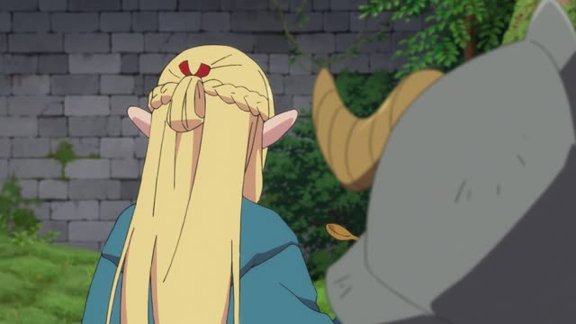
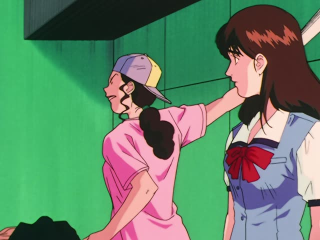
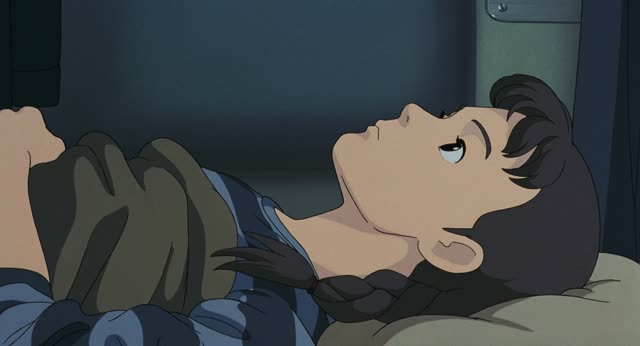
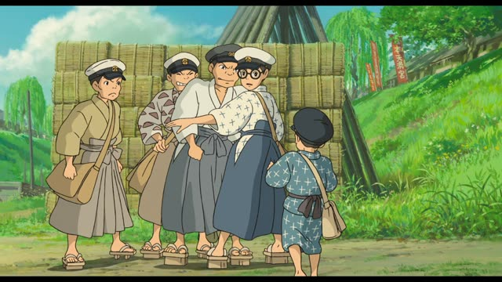
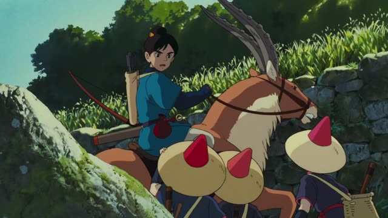
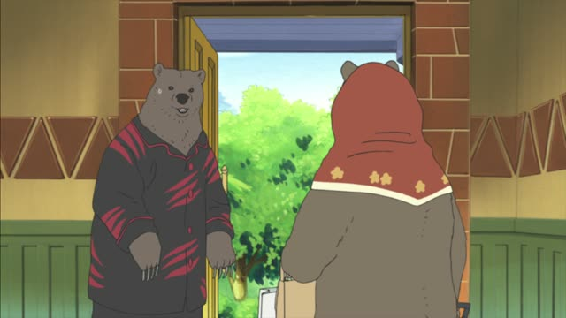

～なさい
Spirited Away
千尋、早くしなさい。
"Chihiro, hurry up."
～なさい is an order from someone above you: a parent, a teacher. Take the ます-stem and add なさい: します → しなさい, 食べます → 食べなさい.
On this card, Chihiro's mother tells her to hurry and catch up. It's firm but not rough.
Softer than the imperative form (しろ), stronger than ～てください. You won't say it to your boss.

Dungeon Meshi · Episode 2
お前たちも食べなさい。
"You eat too."
On this card, Senshi shares his monster stew. 食べます → 食べなさい: an older person telling the young ones to eat.
Quick Examples
A mother in the morning.
早く起きなさい！
"Get up, now!"
CasualA teacher in class.
教科書を開けなさい。
"Open your textbooks."
CasualA parent at dinner.
野菜も食べなさい。
"Eat your vegetables too."
CasualA test instruction.
正しいものを選びなさい。
"Choose the correct one."
Test questions use it too.
CasualWith and without
早く寝てください。
"Please go to bed early." A request.
早く寝なさい。
"Go to bed now." Said from above.
Examples from Media

Slam Dunk · Episode 86
あんたは練習しなさい。
"You go practice."
Ayako to Sakuragi.
1 Litre of Tears · Episode 9
大事に使いなさい。
"Take good care of it."
A father giving his daughter a phone.
Goblin Slayer · Episode 9
なら、もっといい矢をよこしなさい！
"Then give me better arrows!"
Samurai Champloo · Episode 17
もう眠りなさい。
"Sleep now."

Only Yesterday
女子は体育館に集合しなさい。
"Girls, gather in the gym."
A teacher's announcement.

The Wind Rises
君、行きなさい。
"You, go."

Princess Mononoke
みんなは早くもどりなさい。
"Everyone, go back, quickly."

Shirokuma Cafe · Episode 49
もう、乱暴な言葉遣いはおよしなさい。
"Now, stop using such rough language."
よす = stop. A mother to her son.